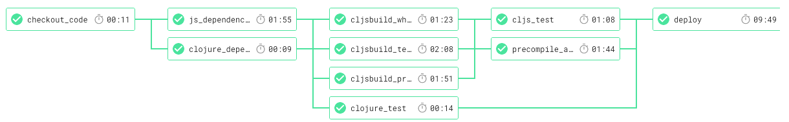
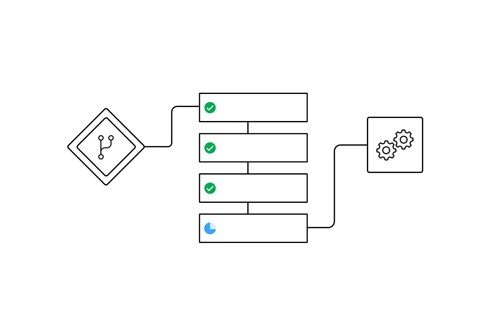
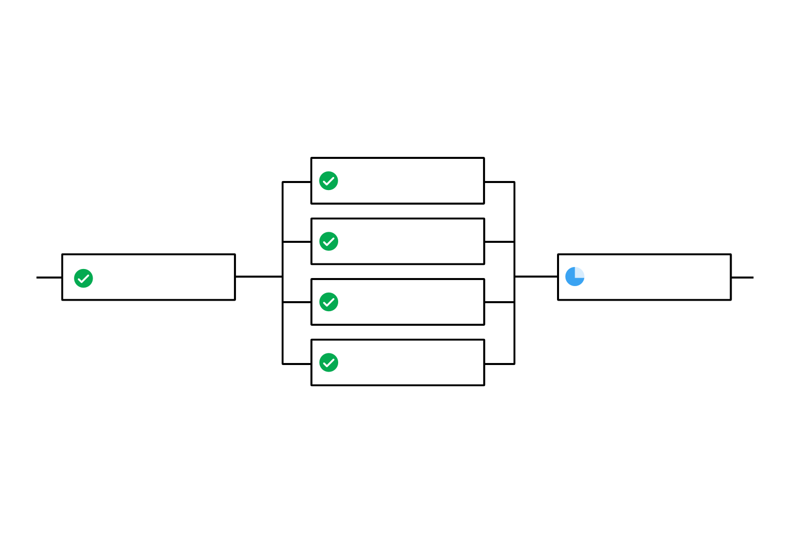
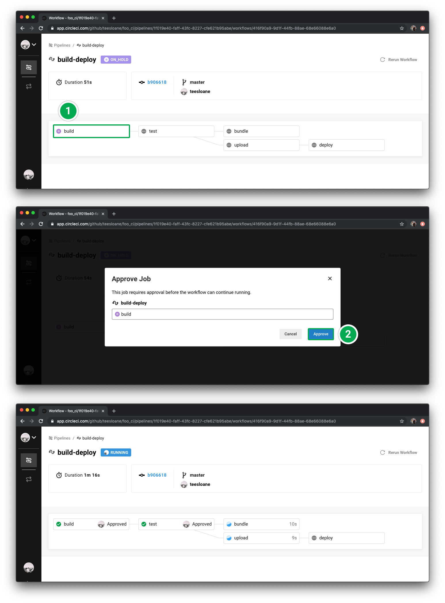
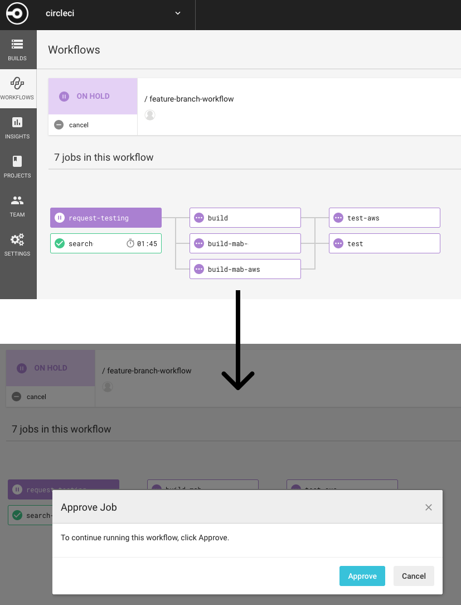
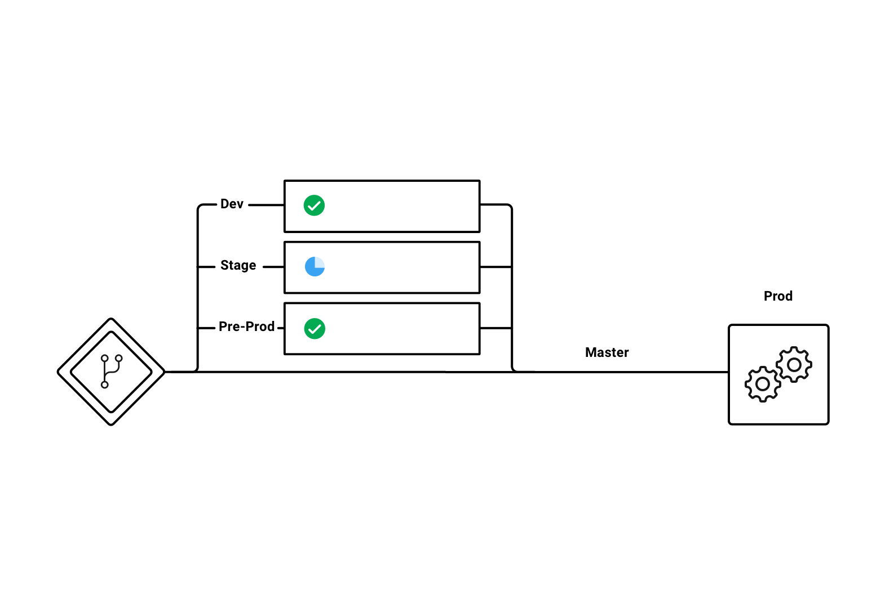
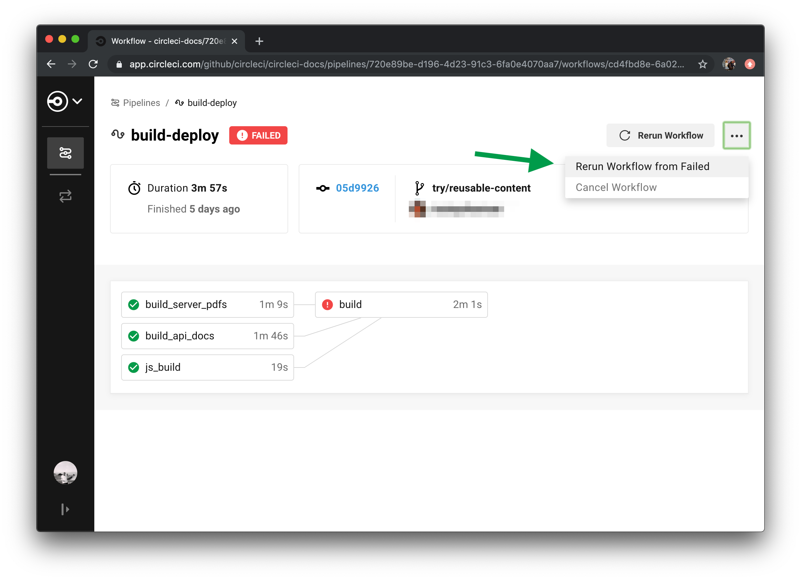
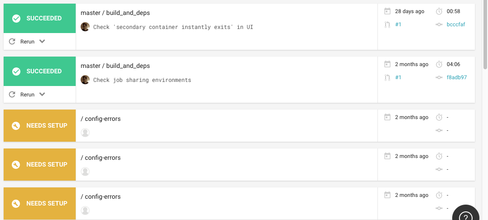
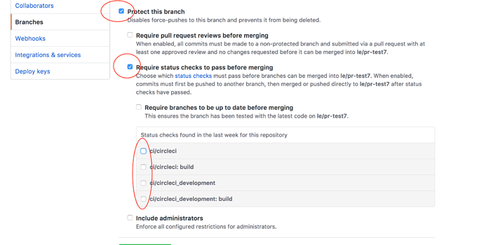

ジョブの実行を Workflow で制御する

迅速なフィードバック、再実行までの時間短縮、リソースの最適化でソフトウェア開発のスピードアップを目指すなら、Workflows を活用してください。 このページでは、下記の内容に沿って Workflows の機能と設定例を解説しています。
- 概要
- Workflows の設定例
- 承認後に処理を続行する Workflow の例
- Workflow をスケジュール実行する
- Workflows におけるコンテキストとフィルターの使い方
- ジョブ間のデータ共有を可能にする Workspaces を使う
- Workflow のなかで失敗したジョブを再実行する
- トラブルシューティング
概要
Workflow は、ジョブの集まりとその実行順序の定義に関するルールを決めるものです。 単純な設定キーで複雑なジョブを自動化し、ビルドに失敗しても素早いリカバリーを可能にします。
Workflows を使うと下記が可能になります。
- リアルタイムのステータス表示を見ながら、ジョブの実行とトラブルシューティングをそれぞれ別個に行えます
- 定期的に実行したいジョブを含む Workflows のスケジュール化が可能です
- バージョンごとのテストの効率化を目的とした、複数ジョブを並行実行するファンアウトをサポートします
- 複数の環境に対して高速なデプロイを実現するファンインをサポートします
Workflow 内のジョブの 1 つが失敗したとしても、それをリアルタイムで知ることができます。 ビルド処理全体が終了するのを待って、改めて最初からジョブを実行するような無駄な時間は不要です。Workflow では 失敗したジョブのみ を再実行できます。
ステータス値
Workflows のステータスは下記のうちいずれかの値をとります。
- RUNNING：Workflow は実行中です。
- NOT RUN：Workflow は未実行です。
- CANCELLED : Workflow は完了前に中断されました。
- FAILING：Workflow 内のジョブが失敗しました。
- FAILED：Workflow 内の 1 つ以上のジョブが失敗しました。
- SUCCESS：Workflow 内のすべてのジョブが問題なく完了しました。
- ON HOLD：Workflow 内のジョブ実行が承認待ちの状態です。
- NEEDS SETUP：そのプロジェクトの config.yml file ファイルに Workflow の記述がないか、内容に誤りがあります。
制限について
プロジェクトの設定にある Advanced Settings で [Enable build processing] を有効にすると、Workflows の実行トリガーに CircleCI API を利用できるようにもなります。 反対に [Enable build processing] を有効にしていないプロジェクトについては、Workflows は API 経由で実行されることはありません。 注 : Workflows を使わずにビルドするには build ジョブを使います。
こうした制限に関する詳細については FAQ をご確認ください。
Workflows の設定例
workflows キーに関する細かな仕様は、CircleCI 設定マニュアルの Workflows で説明しています。
注 : Workflows で構成されたプロジェクトは通常、Docker イメージ、環境変数、run ステップなど、いくつかの構文に分けて記述された複数のジョブからなります。.circleci/config.yml のコードをコンパクトにまとめられるエイリアスの使い方や構文の再利用方法については YAML Anchors/Aliases でご確認ください。 CircleCI の設定における YAML ファイルの再利用というブログ投稿の内容も参考にしてください。
パラレルジョブを実行したいときは、.circleci/config.yml ファイルの末尾に新たに workflows: セクションを追加し、バージョンと Workflow 識別用の固有名を付けます。 下記は、並列動作させる 2 つのジョブからなる Workflow による典型的な自動化の手法を示した .circleci/config.yml の例です。 build_and_test という名前の workflows: キーで Workflow が定義され、その下にネストされた jobs: キーとジョブ名のリストが見えます。 ジョブには依存関係の定義がないことから、これらは並列で実行されます。
version: 2
jobs:
build:
docker:
- image: circleci/<language>:<version TAG>
steps:
- checkout
- run: <command>
test:
docker:
- image: circleci/<language>:<version TAG>
steps:
- checkout
- run: <command>
workflows:
version: 2
build_and_test:
jobs:
- build
- test
以上に関する実際の設定ファイルは Sample Parallel Workflow config で確認できます。
シーケンシャルジョブの例
下記は 4 つのシーケンシャルジョブを含む Workflow の例です。 ジョブは設定した順番通りに実行され、図示しているように、各ジョブはそれぞれ requires: に記述されたジョブが問題なく完了するまで、処理が待機する仕組みになっています。

下記に示す config.yml のコードは、シーケンシャルジョブで構成した Workflow の例です。
workflows:
version: 2
build-test-and-deploy:
jobs:
- build
- test1:
requires:
- build
- test2:
requires:
- test1
- deploy:
requires:
- test2
これを見るとわかるように、依存関係は requires: キーで定義されます。 deploy: ジョブは build、test1、test2 という 3 つのジョブが全て完了するまで実行されません。 ジョブは依存関係にあるそれ以前の全ジョブの処理が終了するまで待つことになるため、deploy ジョブは test2 を待ち、test2 ジョブは test1 を待ち、そしてtest1 ジョブは build を待つという構図になります。
以上に関する実際の設定ファイルは Sample Sequential Workflow config で確認できます。
ファンイン・ファンアウトの Workflow の例
図示している例では、Workflow は最初に build ジョブを普通に実行し、並列動作する一連の acceptance_test ジョブを実行するファンアウトを行います。最終的には deploy ジョブを走らせるファンインで処理を終えます。

下記で示した config.yml のコードは、ファンイン・ファンアウトジョブで構成した Workflow の例です。
workflows:
version: 2
build_accept_deploy:
jobs:
- build
- acceptance_test_1:
requires:
- build
- acceptance_test_2:
requires:
- build
- acceptance_test_3:
requires:
- build
- acceptance_test_4:
requires:
- build
- deploy:
requires:
- acceptance_test_1
- acceptance_test_2
- acceptance_test_3
- acceptance_test_4
この例では、build ジョブが完了した後すぐに 4 つの acceptance_test ジョブがスタートします。 その後、4 つの acceptance_test ジョブの完了を待って、deploy ジョブが実行されます。
以上の実際の設定サンプルは Sample Fan-in/Fan-out Workflow config で確認できます。
承認後に処理を続行する Workflow の例
Workflow では、次のジョブを続行する前に手動の承認操作を待つ設定にすることも可能です。
リポジトリに対するプッシュ権限があれば、Workflow の続行を指示する [Approval] ボタンをクリックできます。
これを設定するには jobs 内にジョブを追加し、type: approval キーを追加してください。
設定例としては次のようなものになります。
# ...
# << build、test1、test2、deploy ジョブを含むビルドの設定 >>
# ...
workflows:
version: 2
build-test-and-approval-deploy:
jobs:
- build # コードをビルドする任意のジョブ
- test1: # 1 つめの test を実行する任意のジョブ
requires: # build ジョブが完了次第 test1 を実行します
- build
- test2: # 2 つめの test を実行する任意のジョブ
requires: # test2 は test1 が完了してからの実行となります
- test1
- hold: # <<< ジョブの続きを実行するには CircleCI の Web ページ上で手動で承認する必要があります。
type: approval # <<< このキーを使うと Workflow を「待機」状態にします
requires: # test2 が完了すると hold ジョブに処理が移ります
- test2
# hold ジョブにおいて承認すると、hold ジョブの完了待ちとなっていた残りのジョブが実行されます
# この例では、ユーザーの手動操作が deploy ジョブの実行トリガーとなります
- deploy:
requires:
- hold
結果的に以上の例では、CircleCI の Workflow ページで hold ジョブをクリックし、
さらに [Approve] をクリックしない限り deploy: ジョブは実行されません。
承認するまでデプロイを待機させるというのが、
ここでの hold ジョブの目的になっています。
Workflow で手動承認を選択する場合は、下記の点に注意が必要です。
-
approvalはworkflowキー配下のジョブ内で のみ 利用できる特殊な type 属性です。 -
holdのように待機用に用意するジョブは、他にジョブ名として使われていない一意の名前にする必要があります。- つまり、
buildやtest1といったすでに使用しているジョブ名では、 そのなかでtype: approvalキーを指定することはできません。
- つまり、
- 待機用のジョブの名前は任意に付けられます。
type: approvalキーを含めてさえいれば、waitやpauseなどでもかまいません。 - 手動の承認操作後に実行されることになる全てのジョブは、必ず
require:でその待機用のジョブ名を指定しておいてください。 上記の例ではdeploy:ジョブがそれに該当します。 - 依存しているジョブに続いて実行される
type: approvalキーのあるジョブまで、Workflow は順番通りに実行します。
スクリーンショット： request-testing ジョブの承認を待つ Workflow。
スクリーンショット：request-testing ジョブをクリックすると現れる承認ダイアログ。


Workflow をスケジュール実行する
ブランチ 1 つ 1 つにおいてコミットごとに Workflow を実行するのは、 非効率で手間もかかります。 そんなときは 特定のブランチに対して、一定の時刻に Workflow を スケジュール実行する機能が使えます。 この機能を使った場合は、そのブランチにおけるトリガーとなるジョブからのコミットは無効となります。
これは膨大なリソースを使用する Workflow、あるいは triggers キーを利用してコミット時以外にも定期的にリポートを生成するような Workflow において有効です。 triggers キーを挿入できるのは workflows キーの配下 だけ です。 この機能は、指定したブランチについて、協定世界時 (UTC) を扱う cron コマンドの構文で Workflow の実行をスケジュールできるようにします。
夜間に実行する例
デフォルトでは、
git push のたびに Workflow の実行がトリガーされます。
これをスケジュール実行に変えるには、
Workflow に triggers キーを追加し、
schedule を指定します。
下記は nightly という Workflow が毎日午前 12 時 00 分 (UTC) に実行されるよう設定した例です。 cron キーは POSIX 規格における crontab の構文で表記します。cron の書き方については crontab man page を参照してください。 この例では、Workflow は master と beta のブランチにおいてのみ実行されます。
workflows:
version: 2
commit:
jobs:
- test
- deploy
nightly:
triggers:
- schedule:
cron: "0 0 * * *"
filters:
branches:
only:
- master
- beta
jobs:
- coverage
上記では、
commit という名前の Workflow には triggersがありません。
そのため、この部分は git push するたびに実行されます。
nightly の Workflow には triggers があり、
schedule で指定した時間に合わせ実行されます。
スケジュール設定における注意点
schedule の配下には、
cron キー と filters キーが必要です。
cron キーの値は valid crontab entry にある通りに指定してください。
注 :
Cron のステップ値 (*/1 や */20 など) には 対応していません。
filters キーの値は、
所定のブランチの実行ルールを定義する内容とします。
詳しくは
CircleCI 設定リファレンスページの branches を参照してください。
実際の設定サンプルは Sample Scheduled Workflows configuration で確認できます。
Workflows におけるコンテキストとフィルターの使い方
このセクションではジョブの実行を管理するコンテキストとフィルターの使い方について解説しています。
環境変数を共有するジョブコンテキストを使う
下記は、環境変数の共有を可能にするコンテキストを使った 4 つのシーケンシャルジョブを含む Workflow の例です。 詳しい設定の手順はコンテキストで確認できます。
下記に示した config.yml のコードは、org-global コンテキストで定義したリソースを使う構成にした、シーケンシャルジョブの例です。
workflows:
version: 2
build-test-and-deploy:
jobs:
- build
- test1:
requires:
- build
context: org-global
- test2:
requires:
- test1
context: org-global
- deploy:
requires:
- test2
上記では Context の設定画面におけるデフォルト名である org-global を設定していますが、このように context キーを設定することで環境変数が定義されます。 この例の test1 と test2 のジョブは、組織に所属するユーザーによって実行された際に同じ共有環境変数を使います。 デフォルトでは、組織の管理する全プロジェクトが、その組織におけるコンテキストについてアクセス権限をもちます。
ブランチレベル（ブランチの配下）でジョブを実行する
下記は、Dev、Stage、Pre-Prod という 3 つのブランチを扱うジョブを設定した Workflow の例です。 Workflows は jobs 直下でネストしている branches キーを無視します。最初は Workflow を使わずジョブレベル（jobs の直下）で branches を使っていて、その後 Workflow を使う設定に変える場合は、ジョブレベルに記述するのではなく、workflows セクションの jobs のなかで branches キーを宣言しなければなりません。下記の config.yml を参考にしてください。

下記に示した config.yml ファイルのコードは、ブランチレベルでジョブを実行する構成にした Workflow の例です。
workflows:
version: 2
dev_stage_pre-prod:
jobs:
- test_dev:
filters: # ブランチ全体にマッチさせる正規表現フィルターを使う
branches:
only: # 下記の正規表現フィルターにマッチするブランチのみが実行される
- dev
- /user-.*/
- test_stage:
filters:
branches:
only: stage
- test_pre-prod:
filters:
branches:
only: /pre-prod(?:-.+)?$/
正規表現の詳しい使い方については、 正規表現でタグとブランチをフィルターする方法をご覧ください。 ブランチ化されているプロジェクトを扱うシーケンシャル Workflow の実際の設定サンプルは、 こちらの設定ファイルで確認できます。
Git タグに対応可能な Workflows を実行する
CircleCI は明示的にタグフィルターを指定しない限り、 タグが含まれる Workflows は実行しません。 また、 あるジョブを実行するのに他のジョブを（直接的にしろ間接的にしろ）必要としているような場合も、 正規表現を用いて そのジョブに対するタグフィルターを指定する必要があります。CircleCI では軽量版と注釈付き版のどちらのタグにも対応しています。
下記は 2 つの workflows を用いた例です。
-
untagged-buildは全てのブランチに対してbuildジョブを実行します。 -
tagged-buildは全てのブランチ だけでなくvから始まるタグに対してbuildジョブを実行します。
workflows:
version: 2
untagged-build:
jobs:
- build
tagged-build:
jobs:
- build:
filters:
tags:
only: /^v.*/
下記の例では
build-n-deploy という名前の Workflow で 2 つのジョブを定義しています。
-
buildジョブは全てのブランチ、全てのタグについて実行します。 -
deployジョブはブランチのない、「v」から始まるタグに対してのみ実行します。
workflows:
version: 2
build-n-deploy:
jobs:
- build:
filters: # タグフィルター付き、かつ「build」を requires している「deploy」に必要
tags:
only: /.*/
- deploy:
requires:
- build
filters:
tags:
only: /^v.*/
branches:
ignore: /.*/
下記の例では
build-testn-deploy という名前の Workflow で 3 つのジョブを定義しています。
-
buildジョブは全てのブランチを対象に、タグが「config-test」から始まるものについてのみ実行します。 -
testジョブは全てのブランチを対象に、タグが「config-test」から始まるものについてのみ実行します。 -
deployジョブはブランチない、タグが「config-test」から始まるものについてのみ実行します。
workflows:
version: 2
build-test-deploy:
jobs:
- build:
filters: # タグフィルター付き、かつ「build」を requires している「test」に必要
tags:
only: /^config-test.*/
- test:
requires:
- build
filters: # タグフィルター付き、かつ「test」を requires している「deploy」に必要
tags:
only: /^config-test.*/
- deploy:
requires:
- test
filters:
tags:
only: /^config-test.*/
branches:
ignore: /.*/
注 : Webhook で許容される GitHub 連携のデータ容量は最大 5MB、 一度にプッシュできるタグの数は最大 3 つまでに制限されています。 それ以上のタグを一度にプッシュしても、 CircleCI は全てを受け取ることはできません。
正規表現でタグとブランチをフィルターする方法
CircleCI のブランチ・タグフィルターは、 Java の正規表現パターンをサポートしています。 フィルターを記述する場合、 CircleCI は厳密な正規表現で照合します。
例えば
only: /^config-test/ と指定したときは config-test タグにのみマッチします。
config-test から始まる全てのタグにマッチさせたいなら、
only: /^config-test.*/ とします。
よくあるのは、セマンティック バージョニングに対してタグを利用するケースです。
バージョン 2.1 リリースのうちパッチバージョンが 3 〜 7 のものについてマッチさせるときは、
/^version-2\.1\.[3-7]/ のように記述します。
パターンマッチングのルールについて詳しく知りたいときは、 java.util.regex のページを参照してください。
ジョブ間のデータ共有を可能にする Workspaces を使う
各 Workflow には Workspace が割り当てられています。Workspace は、Workflow の進行につれてダウンストリームのジョブにファイルを転送するために使用されます。 Workspace ではデータの追加保存のみが可能で、 ジョブは Workspace に永続的にデータを保管しておけます。 この設定を用いるとデータをアーカイブし、コンテナの外に新たなレイヤーを生成します。 後で実行されるジョブは、Workspace を通じてそのコンテナのファイルシステムにアクセスできることになります。 下記は、Workspace に保管されたファイルへのアクセスと、ジョブの順序を表すレイヤーの展開図を解説したものです。

そのジョブ固有の動作を行ったり、後のジョブで必要になるデータを渡したりするのに Workspaces を使います。 複数のブランチでジョブを実行するような Workflows では、Workspaces を利用してデータを共有したくなることがあります。 また、テストコンテナで使われるコンパイル済みデータを含むプロジェクトにも Workspaces は役立ちます。
例えば、Scala のプロジェクトにおいては、ビルドジョブのコンパイルの段階で多くの CPU リソースを消費します。 一方、Scala のテストジョブでは CPU 負荷は高いとは言えず、複数のコンテナを並行処理しても問題ないほどです。 ビルドジョブに大きなコンテナを使い、そのなかで生成したコンパイル済みデータを Workspace に保存しておくことで、すでにコンパイルされた Scala をそのままテストコンテナで使うことが可能になります。
もう 1 つの例は、Java アプリケーションをビルドし、その jar ファイルを Workspace に保存する build ジョブを含むプロジェクトです。 jar を用いてintegration-test、unit-test、code-coverage の 3 つのテストを並行処理するために、build ジョブをファンアウトするとします。
このとき、ジョブで作られたデータを保存して他のジョブでも使えるようにするには、ジョブ内に persist_to_workspace キーを追加します。 persist_to_workspace の paths: プロパティに記述されたファイルとディレクトリは、root キーで指定しているディレクトリの相対パスとなる一時 Workspace にアップロードされます。 その後、ファイルとディレクトリはアップロードされ、続くジョブで (あるいは Workflow の再実行時に) 利用できるようにします。
attach_workspace キーをセットして、保存されたデータを取得できるようにジョブを設定します。 下記の config.yml ファイルの例では、flow ジョブと、そこで作られたリソースを使う downstream ジョブ、という 2 つのジョブを定義しています。 Workflow はシーケンシャルのため、downstream ジョブの処理が開始する前に flow ジョブが終了していなければなりません。
# ここでは再利用可能な Executor を有効にするため CircleCI 2.1 を使用しています。
# これによりジョブ間で再利用する Docker イメージを定義できるようになります。
# 詳細は https://circleci.com/docs/2.0/reusing-config/#authoring-reusable-executors
version: 2.1
executors:
my-executor:
docker:
- image: buildpack-deps:jessie
working_directory: /tmp
jobs:
flow:
executor: my-executor
steps:
- run: mkdir -p workspace
- run: echo "Hello, world!" > workspace/echo-output
# 後に続くジョブで利用できるように Workspace に指定のパス（workspace/echo-output）を保存します。
- persist_to_workspace:
# working_directory からの相対パスか絶対パスを指定します。
# これは Workspace のルートディレクトリとなるコンテナ内のディレクトリです
root: workspace
# root からの相対パスを指定します
paths:
- echo-output
downstream:
executor: my-executor
steps:
- attach_workspace:
# working_directory からの相対パスか絶対パスを指定します
at: /tmp/workspace
- run: |
if [[ `cat /tmp/workspace/echo-output` == "Hello, world!" ]]; then
echo "成功しました！";
else
echo "失敗しました！"; exit 1
fi
workflows:
version: 2.1
btd:
jobs:
- flow
- downstream:
requires:
- flow
build ジョブと deploy ジョブの間でデータをやりとりする、
Workspace を活用する生きたサンプルとして、
こちらの config.yml も参考にしてください。
これは
CircleCI のマニュアルのビルドに利用しているものです。
Workspaces、
キャッシュ、
アーティファクトの使用における概念がわかる情報として、
ブログ記事 Persisting Data in Workflows: When to Use Caching, Artifacts, and Workspaces もチェックしてみてください。
Workflow のなかで失敗したジョブを再実行する
Workflow を利用すると、失敗したビルドに対して迅速にアクションをとれるようになります。 その際、Workflow のなかで 失敗した ジョブのみを再実行できます。CircleCI で [Workflows] アイコンをクリックし、目的の Workflow を選んでジョブごとのステータスを表示してから、[Rerun] ボタンをクリックして [Rerun from failed] を選びます。

トラブルシューティング
ここでは Workflow に関する一般的な問題とその解決方法について解説しています。
失敗した Workflows を再実行する
ときどき見受けられるのが、Workflow の実行前（のビルド処理の最中）に失敗してしまうケースです。 今までは問題なく成功していたにもかかわらず、その後 Workflow の再実行は失敗する、といったことがあります。 この問題をひとまず解決するには、プロジェクトのリポジトリに対して変更があったとしてプッシュします。 最初にビルド処理の再実行が始まり、続いて Workflow が実行されます。
Workflows がスタートしない
Workflow の設定時に新しいジョブが表示されなくなったときは、config.yml の記述にエラーがあると考えられます。
Workflow がトリガーされないことがよくある場合、設定エラーが原因です。Workflow の実行が妨げられ、 その結果としてジョブがスタートしていないものと思われます。
Workflow の設定を行うときは、その設定に問題がないか CircleCI の Workflows ページ (Jobs ページでは ありません) をたびたび確認するとよいでしょう。
プロジェクトの Job ページは下記のような URL になっています。
https://circleci.com/:VCS/:ORG/:PROJECT
また、Workflow ページは下記のような URL となっています。
https://circleci.com/:VCS/:ORG/workflows/:PROJECT
この Workflows ページで、黄色地に [NEEDS SETUP] という文字が表示されていないか確認してください。

Workflows の処理中に GitHub で待機状態のままになる
GitHub リポジトリのブランチに実装済みの Workflows があり、かつステータスチェックの処理が終わらないときは、GitHub のステータス設定で解除したほうが良い項目があるかもしれません。 例えば、[Protect this branches] をオンにしている場合、以下のスクリーンショットにあるように、ステータスチェックの設定対象から ci/circleci を外す必要があります。この項目は古い CircleCI 1.0 のデフォルト設定になっていたものです。

ci/circleci のチェックボックスがオンになっていると、Workflow 使用時に GitHub での処理完了を表すステータス表示に問題が発生することがあります。原因は、名前で区別したジョブを含むキーと合わせて CircleCI がステータスを GitHub にポストするためです。
この設定を解除するには、GitHub の Setting ページから Branches にアクセスし、保護されたブランチの Edit ボタンクリックします。該当のページは https://github.com/your-org/project/settings/branches のような URL になっています。
関連情報
-
CircleCI 1.0 の
circle.ymlファイルから CircleCI 2.0 の.circleci/config.ymlファイルへ移行する際の Workflow の設定方法を知りたい場合は、2.0 移行マニュアルの Workflows の設定の手順をご覧ください。 -
Workflows に関するよくある質問は、FAQ の Workflow を参照してください。
-
Workflows を使ったデモアプリは、GitHub の CircleCI Demo Workflows で入手できます。